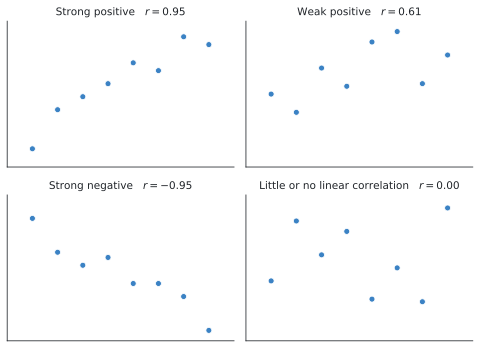
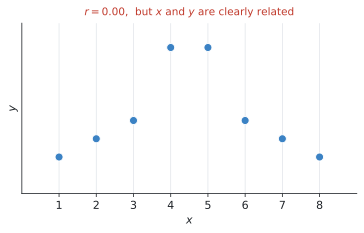
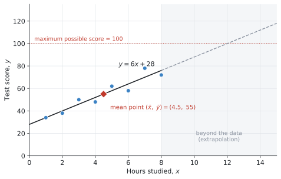

SL 4.4 — Correlation and linear regression（相関と回帰 — Pearsonの相関係数）
- scatter diagram（散布図）をかき、相関の向きと強さを言葉で説明できる。
- 電卓で Pearson’s product-moment correlation coefficient \(r\) を求められる。
- \(r\) の値から相関を言葉で説明できる（strong / weak、positive / negative）。
- line of best fit を目分量でかき、平均点 \((\bar{x}, \bar{y})\) を通すことができる。
- 電卓で regression line of \(y\) on \(x\)（\(y = ax + b\)）を求められる。
- \(a\) と \(b\) が問題の中で何を意味するかを説明できる。
- 回帰直線で予測し、extrapolation（外挿）の危険を指摘できる。
- correlation does not imply causation を説明できる。
SL 4.4 の欄はありません。 公式集の Topic 4 は 4.2, 4.3, 4.5, 4.6, 4.7, 4.8 だけです。
\(r\) も回帰直線も、シラバスが電卓で出すものと決めているからです。
Technology should be used to calculate \(r\).
Technology should be used to find the equation.
式を覚える必要はありません。 そのかわり、出てきた数を言葉で説明することが問われます。
シラバスに、こう書かれています。
Critical values of \(r\) will be given where appropriate.
「\(r\) がいくつ以上なら強い相関と言えるか」の基準は、必要なときは問題文に書いてあります。 表を覚える必要はありません。
The idea
ここまでは1種類のデータ（通学時間だけ、点数だけ）を扱ってきました。この項目からは2種類を組にして考えます。これを bivariate data（2変量データ）といいます。
「勉強時間と点数」「気温とアイスの売上」のように、片方が増えるともう片方も増えるのかを調べます。
やることは3つです。
- 散布図をかいて、目で見る
- \(r\) を出して、相関の強さを数で表す
- 回帰直線を出して、予測に使う
1. scatter diagram と相関の型
scatter diagram（散布図）は、\((x, y)\) の組をそのまま点で打った図です。
点の並び方で、相関を向きと強さの2つで説明します。

| 言葉 | 意味 | |
|---|---|---|
| 向き | positive（正） | \(x\) が増えると \(y\) も増える |
| negative（負） | \(x\) が増えると \(y\) は減る | |
| 強さ | strong（強い） | 点が直線の近くに並んでいる |
| weak（弱い） | 点がばらついている | |
| no correlation | 並びが見えない |
答案には「向き」と「強さ」の両方を書いてください。 strong positive correlation のように、2語セットが基本の形です。
2. Pearson’s \(r\)
相関の強さを数で表したものが Pearson’s product-moment correlation coefficient（ピアソンの積率相関係数）で、記号は \(r\) です。
\[ -1 \leq r \leq 1 \]
| \(r\) の値 | 意味 |
|---|---|
| \(r = 1\) | 完全な正の相関（点が全部1本の直線上） |
| \(r\) が \(1\) に近い | strong positive |
| \(r\) が \(0\) に近い | no correlation |
| \(r\) が \(-1\) に近い | strong negative |
| \(r = -1\) | 完全な負の相関 |
符号が向き、絶対値の大きさが強さです。\(r = -0.9\) と \(r = 0.9\) は、向きが逆なだけで、強さは同じです。
シラバスに、はっきり書かれています。
Students should be aware that Pearson’s product moment correlation coefficient (\(r\)) is only meaningful for linear relationships.
次の図を見てください。

\(r = 0.00\) ですが、\(x\) と \(y\) にははっきりした関係があります。山の形なので、直線では表せないというだけです。
\(r\) が \(0\) に近いから関係がない、とは言えません。 「直線の関係は見られない」と言うのが正確です。
だから、必ず散布図も見てください。 \(r\) の数字だけで判断すると、こういう形を見落とします。
3. line of best fit と平均点
line of best fit（最もよくあてはまる直線）を目分量でかくとき、シラバスに条件が1つあります。
Scatter diagrams; lines of best fit, by eye, passing through the mean point.
平均点 \((\bar{x}, \bar{y})\) を必ず通します。
\(\bar{x}\) は \(x\) の平均、\(\bar{y}\) は \(y\) の平均です。この1点だけは、必ず直線の上に来ます。
ですから、手でかくときの手順はこうなります。
- \(\bar{x}\) と \(\bar{y}\) を計算する（電卓の One-Variable Statistics、または2変数の統計）
- その点 \((\bar{x}, \bar{y})\) を図に打つ
- その点を通るように、点の真ん中を通る直線を定規で引く
平均点に印を付けておいてください。 採点者は、そこを通っているかを見ます。
4. regression line of \(y\) on \(x\)
目分量ではなく、電卓が計算してくれる直線が regression line（回帰直線）です。
IB では、次の形で書きます。
\[ y = ax + b \tag{1}\]
IB の書き方では、
- \(a\) … gradient（傾き）
- \(b\) … \(y\)-intercept（\(y\) 切片）
です。SL 2.1 の \(y = mx + c\) で言えば、\(a\) が \(m\)、\(b\) が \(c\) にあたります。
ところが TI-Nspire の Linear Regression (a+bx) を選ぶと、\(y = a + bx\) の形で出てきます。こちらは \(b\) が傾きです。文字の意味が逆になります。
ですから、この本では Linear Regression (mx+b) を使います。\(m\) が傾き、\(b\) が切片なので、\(m\) を \(a\) に読みかえるだけで済みます。
画面に出た文字をそのまま写さないでください。 どちらが傾きかを、毎回確かめてください。
次の図が、その回帰直線です。

回帰直線も、必ず平均点 \((\bar{x}, \bar{y})\) を通ります。 図の赤いひし形がそれです。\((4.5, 55)\) が直線の上に乗っています。
\[ 6 \times 4.5 + 28 = 27 + 28 = 55 \quad \checkmark \]
\(a\) と \(b\) の意味を言葉にする
シラバスが求めているのは、計算ではなく解釈です。
Interpret the meaning of the parameters, \(a\) and \(b\), in a linear regression \(y = ax + b\).
図 3 の \(y = 6x + 28\) なら、こうなります。
| 記号 | 値 | 意味 |
|---|---|---|
| \(a\) | \(6\) | 勉強時間が 1時間増えるごとに、点数が約6点上がる |
| \(b\) | \(28\) | 勉強時間が \(0\) 時間のときの予測点数は 28点 |
\(a\) は「\(x\) が1増えたときの \(y\) の変化」、\(b\) は「\(x = 0\) のときの \(y\)」です。これを問題の言葉で書きます。「傾きは6です」だけでは点になりません。
\(x = 0\) が現実にありえない場面では、\(b\) の解釈は無理をしないでください。
たとえば \(x\) が「気温」なら \(0\)℃ はありえますが、\(x\) が「人の身長」なら \(0\) cm はありえません。そういうときは、
The value of \(b\) has no meaningful interpretation here, because \(x = 0\) is outside the range of the data.
と書くのが正直な答えです。
5. 予測と、extrapolation の危険
回帰直線に \(x\) を入れれば、\(y\) を予測できます。
\[ x = 5.5 \quad \longrightarrow \quad y = 6(5.5) + 28 = 61 \]
\(5.5\) 時間は、データのある範囲（\(1\)〜\(8\) 時間）の中にあります。こういう予測を interpolation（内挿）といい、信頼できます。
問題は、範囲の外を予測するときです。
\[ x = 20 \quad \longrightarrow \quad y = 6(20) + 28 = 148 \]
\(148\) 点。テストは100点満点なのに、です。
これが extrapolation（外挿）で、シラバスが警告しているものです。
Students should be aware of the dangers of extrapolation.
図 3 の灰色の部分がその領域です。\(x = 12\) で予測がちょうど \(100\) 点に達し、それより先はありえない値になります。
理由は単純です。 データのない場所で、その直線が成り立つ保証はどこにもありません。\(20\) 時間も勉強した人のデータを、私たちは1つも持っていないのです。
\(y\) から \(x\) を予測してはいけません
シラバスに、もう1つ注意があります。
Students should be aware that they cannot always reliably make a prediction of \(x\) from a value of \(y\), when using a \(y\) on \(x\) line.
\(y\) on \(x\) の直線は、「\(x\) から \(y\) を予測する」ために作られています。 逆向きには作られていません。
「\(70\) 点を取るには何時間勉強すればよいか」を、この式を逆に解いて出すのは、厳密には正しくありません。
試験でこれが問われたら、「\(y\) on \(x\) の回帰直線なので、\(y\) から \(x\) を予測するのは信頼できない」と書いてください。
6. correlation does not imply causation
シラバスが名指しで求めている内容です。
Students should be able to make the distinction between correlation and causation and know that correlation does not imply causation.
相関があっても、原因と結果とはかぎりません。
たとえば「アイスの売上」と「水の事故の件数」には強い正の相関があります。ですが、アイスを食べると溺れるわけではありません。
両方とも「気温が高い」ことが原因です。こういう裏に隠れた変数を confounding variable（交絡変数）といいます。
試験ではこう書く
Although there is a strong positive correlation between the two variables, this does not mean that one causes the other. There may be a third variable, such as temperature, which affects both.
（2つの変数に強い正の相関があっても、一方が他方の原因だということにはなりません。両方に影響する第3の変数、たとえば気温があるかもしれません。）
型は2文です。
- 相関があることは認める（Although there is a strong correlation…）
- でも原因とは言えない＋第3の変数の例
「相関と因果は違うから」だけでは点になりません。 具体的に「何が第3の変数になりうるか」を挙げてください。
Why it works
ここでは、なぜ回帰直線が必ず平均点を通るのかだけを説明します。
回帰直線は、それぞれの点と直線との縦のずれを、全体として一番小さくするように引かれています。
いま、直線を平均点 \((\bar{x}, \bar{y})\) から外したとします。すると全部の点に対して、まんべんなくずれが増えます。全体を上にずらせば、下にある点との差が大きくなるからです。
ずれの合計が一番小さくなるのは、上下のずれがちょうど釣り合う位置です。そして上下のずれが釣り合う高さこそ、\(y\) の平均 \(\bar{y}\) です。
同じことが横方向にも言えるので、直線は \((\bar{x}, \bar{y})\) を通ることになります。
だから、手でかく line of best fit も平均点を通すのです。 目分量でも、その1点さえ押さえておけば、大きく外れません。
Worked examples
問題文は英語です。意味が理解できなかったら、問題文の下の「日本語訳」を開いてください。解説は日本語です。
例題 1 For each of the following values of \(r\), describe the correlation.
(a) \(r = 0.92\)
(b) \(r = -0.88\)
(c) \(r = 0.15\)
(d) \(r = -0.41\)
日本語訳
次のそれぞれの \(r\) の値について、相関を説明しなさい。
(a) \(r = 0.92\)
(b) \(r = -0.88\)
(c) \(r = 0.15\)
(d) \(r = -0.41\)
（describe the correlation は「向きと強さを言葉で書く」という意味です。）
向きと強さの2語セットで答えます。
符号を見て向き、絶対値を見て強さです。
(a) \(0.92\) は \(1\) に近く、符号は正。→ strong positive
(b) \(-0.88\) は \(-1\) に近く、符号は負。→ strong negative
(c) \(0.15\) は \(0\) に近い。→ no（または very weak）correlation
(d) \(-0.41\) は \(0\) と \(-1\) の中間くらい。→ weak negative
「強い」「弱い」の境目に厳密な決まりはありません。 目安として、絶対値が \(0.8\) を超えれば strong、\(0.5\) 前後なら weak、\(0.2\) 未満ならほぼ相関なし、と考えれば十分です。
必要な場合は、問題文に critical value が与えられます。
(a) Strong positive correlation.
(b) Strong negative correlation.
(c) No correlation (or very weak positive correlation).
(d) Weak negative correlation.
例題 2 The table shows the number of hours eight students spent studying, \(x\), and their test scores, \(y\).
| Hours, \(x\) | 1 | 2 | 3 | 4 | 5 | 6 | 7 | 8 |
|---|---|---|---|---|---|---|---|---|
| Score, \(y\) | 34 | 38 | 50 | 48 | 62 | 58 | 78 | 72 |
(a) Find \(\bar{x}\) and \(\bar{y}\).
(b) Find Pearson’s product-moment correlation coefficient, \(r\).
(c) Describe the correlation between \(x\) and \(y\).
(d) Find the equation of the regression line of \(y\) on \(x\).
日本語訳
表は、\(8\) 人の生徒が勉強した時間 \(x\)（時間）と、テストの点数 \(y\) です。
(a) \(\bar{x}\) と \(\bar{y}\) を求めなさい。
(b) ピアソンの積率相関係数 \(r\) を求めなさい。
(c) \(x\) と \(y\) の相関を説明しなさい。
(d) \(y\) の \(x\) への回帰直線の式を求めなさい。
(a) 平均を出します。
\[ \bar{x} = \frac{1+2+\cdots+8}{8} = \frac{36}{8} = 4.5 \]
\[ \bar{y} = \frac{34+38+50+48+62+58+78+72}{8} = \frac{440}{8} = 55 \]
この \((4.5, 55)\) が平均点です。あとで使います。
(b) 電卓の Linear Regression に入れると、\(r\) も一緒に出ます（GDCの使い方）。
\[ r = 0.9486\ldots = 0.949 \quad (3 \text{ s.f.}) \]
(c) \(0.949\) は \(1\) にとても近く、符号は正です。
\[ \text{strong positive correlation} \]
(d) 同じ画面に傾きと切片が出ています。
\[ y = 6x + 28 \]
確かめ：この直線に平均点を入れてみます。
\[ 6(4.5) + 28 = 55 \quad \checkmark \]
\(\bar{y}\) と一致しました。 回帰直線は必ず平均点を通るので、これが一番早い検算です。
(a) \(\bar{x} = 4.5\) hours, \(\bar{y} = 55\) marks
(b) \(r = 0.949\) (3 s.f.)
(c) There is a strong positive correlation between the number of hours studied and the test score.
(d) \(y = 6x + 28\)
例題 3 Use the regression line \(y = 6x + 28\) from 例 2.
(a) Interpret the meaning of \(a = 6\) in this context.
(b) Interpret the meaning of \(b = 28\) in this context.
日本語訳
例 2 の回帰直線 \(y = 6x + 28\) を使います。
(a) この文脈における \(a = 6\) の意味を説明しなさい。
(b) この文脈における \(b = 28\) の意味を説明しなさい。
（Interpret は「その数値が現実の何を意味するかを説明する」という指示です。）
計算する問題ではありません。 \(a\) と \(b\) の意味を、問題の言葉で書きます。
(a) \(a\) は傾きです。傾きは「\(x\) が \(1\) 増えたとき \(y\) がどれだけ増えるか」を表します。
ここでは \(x\) が勉強時間、\(y\) が点数なので、勉強時間が1時間増えるごとに、点数が約6点上がるということです。
「傾きが6です」だけでは点になりません。 「1時間」「6点」というこの問題の言葉を使ってください。
(b) \(b\) は \(y\) 切片で、\(x = 0\) のときの \(y\) です。
まったく勉強しなかった生徒の予測点数が28点、という意味になります。
回帰直線は予測の式です。「6点上がる」と言い切ると、必ずそうなるように聞こえてしまいます。
英語では on average（平均して）や approximately（約）を入れます。
(a) For each additional hour of study, the test score increases by approximately \(6\) marks, on average.
(b) A student who does no studying at all is predicted to score \(28\) marks.
例題 4 Use the regression line \(y = 6x + 28\) from 例 2.
(a) Estimate the score of a student who studies for \(5.5\) hours.
(b) A student claims that studying for \(20\) hours would give a score of \(148\). Comment on this claim.
日本語訳
例 2 の回帰直線 \(y = 6x + 28\) を使います。
(a) \(5.5\) 時間勉強した生徒の点数を推定しなさい。
(b) ある生徒が「\(20\) 時間勉強すれば \(148\) 点になる」と言っています。この主張についてコメントしなさい。
(a) 式に入れるだけです。
\[ y = 6(5.5) + 28 = 33 + 28 = 61 \]
\(5.5\) 時間はデータのある範囲（\(1\)〜\(8\) 時間）の中なので、この予測は信頼できます（interpolation）。
(b) 計算そのものは合っています。
\[ 6(20) + 28 = 148 \]
ですが、この主張は成り立ちません。 理由が2つあります。
- \(20\) 時間は、データの範囲（\(1\)〜\(8\) 時間）のはるか外側です。そこで同じ直線が成り立つ保証はありません（extrapolation）
- テストは \(100\) 点満点なので、\(148\) 点はそもそもありえません
「計算が違う」と書かないでください。 計算は合っています。問題は、その式を使ってよい範囲を超えていることです。
(a) \(y = 6(5.5) + 28 = 61\) marks
(b) The value \(x = 20\) is far outside the range of the data (\(1\) to \(8\) hours), so this is extrapolation and the regression line cannot be relied on there. Also, a score of \(148\) is impossible because the maximum score is \(100\). The claim is not valid.
例題 5 A study finds a strong positive correlation between the number of ice creams sold in a town and the number of water accidents in that town.
A newspaper claims that eating ice cream causes water accidents. Explain why this conclusion is not valid.
日本語訳
ある調査で、町でのアイスクリームの売上個数と、その町での水の事故の件数に、強い正の相関があることが分かりました。
ある新聞が「アイスクリームを食べることが水の事故の原因である」と主張しています。この結論が正しくない理由を説明しなさい。
計算はありません。 correlation does not imply causation の話です。
まず、相関があること自体は否定しません。 データがそう言っているのですから。
問題は、そこから「原因である」と結論したことです。
この場合の第3の変数は「気温」です。 暑い日にはアイスがよく売れ、同じ暑い日には泳ぐ人も増えるので、水の事故も増えます。アイスと事故は、どちらも気温の結果です。
答案には、この「第3の変数の例」を必ず書いてください。 そこが点になります。
A correlation between two variables does not mean that one causes the other.
Both variables are likely to be affected by a third variable: the temperature. On hot days more ice cream is sold, and more people go swimming, so more water accidents occur. The ice cream sales do not cause the accidents.
Common errors
positive だけでは足りません。strong positive のように、強さも書いてください。
逆に strong だけでも足りません。2語セットが基本です。
正しくは「直線の関係が見られない」です。
図 2 のように、\(r = 0\) でもはっきりした関係があることがあります。\(r\) は直線の関係しか測れません。
Linear Regression (a+bx) を選ぶと \(y = a + bx\) の形になり、\(b\) が傾きです。IB の \(y = ax + b\) とは逆です。
Linear Regression (mx+b) を使い、\(m\) を \(a\) に読みかえてください。
Interpret は、問題の言葉で説明せよという指示です。
「傾きは6です」ではなく、「勉強時間が1時間増えるごとに点数が約6点上がる」と書いてください。
データの範囲の外を予測したら、必ず一言添えてください。
計算が合っていても、「範囲の外なので信頼できない」と書かないと点が出ません。
シラバスが passing through the mean point と指定しています。
\((\bar{x}, \bar{y})\) を先に打ってから、そこを通る直線を引いてください。
「相関は因果ではない」だけでは、覚えた言葉を書いただけになります。
「気温が両方に影響している」のように、具体的な第3の変数を挙げてください。
Using your GDC (TI-Nspire CX II)
2つの列にデータを入れる
ctrl + doc → 4: Add Lists & Spreadsheet\(x\) の列と \(y\) の列を作り、名前を付けます（hours と score など）。
行がずれないように注意してください。 \(x\) と \(y\) は同じ行が1組です。
\(r\) と回帰直線を一度に出す
menu → Statistics → Stat Calculations → Linear Regression (mx+b)| 欄 | 入れるもの |
|---|---|
X List |
\(x\) の列（hours） |
Y List |
\(y\) の列（score） |
Save RegEqn to |
f1 のままでよい |
| 他 | そのまま |
OK を押すと、結果が表で出ます。
| 表示 | 意味 |
|---|---|
m |
傾き（IB の \(a\)） |
b |
\(y\) 切片（IB の \(b\)） |
r |
相関係数 |
r² |
決定係数（AI SL では使いません） |
例 2 なら m = 6、b = 28、r = 0.948683… と出ます。
答案には \(y = 6x + 28\) と書きます。m を a に書きかえるのを忘れないでください。
Linear Regression (a+bx) を選ばない
こちらを選ぶと \(y = a + bx\) の形になり、a が切片、b が傾きになります。IB の書き方と逆です。
取り違えると、\(y = 28x + 6\) のようなまったく違う式を書いてしまいます。
傾きのほうが大きい／小さい、という思い込みも危険です。 迷ったら、平均点を代入して確かめてください（例 2 の検算）。
散布図をかく
ctrl + doc → 5: Add Data & Statistics下の軸をクリックして \(x\) の列、左の軸をクリックして \(y\) の列を選びます。これで散布図になります。
回帰直線を重ねるには、
menu → Analyze → Regression → Show Linear (mx+b)点の並びと直線が合っているか、目で確かめてください。 直線が明らかにずれていたら、\(x\) と \(y\) を逆に入れています。
平均点を確かめる
\(\bar{x}\) と \(\bar{y}\) は、One-Variable Statistics を2回（\(x\) の列と \(y\) の列）走らせても出せますが、
menu → Statistics → Stat Calculations → Two-Variable Statisticsなら一度に両方出ます。\(\bar{x}\) と \(\bar{y}\) が並んで表示されます。
回帰直線が出たら、\(\bar{x}\) を式に入れて \(\bar{y}\) になるかを確かめてください。
\[ a\bar{x} + b = \bar{y} \]
必ず成り立ちます。 合わなければ、傾きと切片を取り違えているか、入力を間違えています。
10秒で終わる検算です。毎回やってください。
Exercises
各問題に、折りたたみが3つ付いています。日本語訳、解答例（答案用紙に書くべきこと。英語です）、解説（なぜそうなるか。日本語です）。
まず自分で解いて、次に解答例と見くらべてください。解説は、合わなかったときだけ開けば十分です。
1 Describe the correlation for each of the following values of \(r\).
(a) \(r = -0.94\)
(b) \(r = 0.07\)
(c) \(r = 0.58\)
日本語訳
次のそれぞれの \(r\) の値について、相関を説明しなさい。
(a) \(r = -0.94\)
(b) \(r = 0.07\)
(c) \(r = 0.58\)
(a) Strong negative correlation.
(b) No correlation.
(c) Weak (or moderate) positive correlation.
符号で向き、絶対値で強さです。
(a) \(-0.94\) は \(-1\) にとても近い。負で強い。
(b) \(0.07\) はほぼ \(0\)。相関なし。
(c) \(0.58\) は中くらい。weak positive でも moderate positive でも構いません。
必ず2語で書いてください。 negative だけ、strong だけでは足りません。
2 The table shows the maximum daily temperature, \(x\) °C, and the number of cold drinks sold, \(y\), at a shop on eight days.
| \(x\) | 14 | 17 | 19 | 21 | 24 | 26 | 28 | 31 |
|---|---|---|---|---|---|---|---|---|
| \(y\) | 27 | 31 | 31 | 41 | 49 | 44 | 50 | 63 |
(a) Find \(\bar{x}\) and \(\bar{y}\).
(b) Find \(r\).
(c) Describe the correlation.
(d) Find the equation of the regression line of \(y\) on \(x\).
日本語訳
表は、ある店での \(8\) 日間の最高気温 \(x\)（℃）と、冷たい飲み物の売れた本数 \(y\) です。
(a) \(\bar{x}\) と \(\bar{y}\) を求めなさい。
(b) \(r\) を求めなさい。
(c) 相関を説明しなさい。
(d) \(y\) の \(x\) への回帰直線の式を求めなさい。
(a) \(\bar{x} = 22.5\) °C, \(\bar{y} = 42\) drinks
(b) \(r = 0.955\) (3 s.f.)
(c) There is a strong positive correlation between the temperature and the number of cold drinks sold.
(d) \(y = 2x - 3\)
電卓に2列入れて Linear Regression (mx+b) を走らせるだけです。
(a) \(\bar{x} = \dfrac{180}{8} = 22.5\)、\(\bar{y} = \dfrac{336}{8} = 42\)。
(b) \(r = 0.9551\ldots\) なので \(0.955\)。
(d) m = 2、b = -3 と出ます。答案では \(y = 2x - 3\) と書きます。
検算：\(2(22.5) - 3 = 45 - 3 = 42 = \bar{y}\) ✓ 平均点を通っています。
3 Using the regression line \(y = 2x - 3\) from question 2, interpret the meaning of the value \(2\) in this context.
日本語訳
問題2の回帰直線 \(y = 2x - 3\) について、この文脈における \(2\) の意味を説明しなさい。
For each increase of \(1\) °C in the maximum daily temperature, approximately \(2\) more cold drinks are sold, on average.
\(2\) は傾き（IB の \(a\)）です。傾きは「\(x\) が1増えたときの \(y\) の増え方」を表します。
ここでは \(x\) が気温、\(y\) が本数なので、「気温が1℃上がるごとに、飲み物が約2本多く売れる」となります。
「傾きは2です」では点になりません。 1 °C と 2 more cold drinks という、この問題の言葉を使ってください。
on average や approximately を入れるのも忘れずに。
4 Using the regression line \(y = 2x - 3\) from question 2:
(a) Estimate the number of drinks sold when the temperature is \(23\) °C.
(b) Explain why the line should not be used to estimate the number of drinks sold when the temperature is \(45\) °C.
日本語訳
問題2の回帰直線 \(y = 2x - 3\) について、
(a) 気温が \(23\) ℃ のときに売れる本数を推定しなさい。
(b) 気温が \(45\) ℃ のときの本数を推定するのに、この直線を使うべきでない理由を説明しなさい。
(a) \(y = 2(23) - 3 = 43\) drinks
(b) The temperature \(45\) °C is outside the range of the data, which is from \(14\) °C to \(31\) °C. Using the line here would be extrapolation, and there is no evidence that the linear relationship continues that far.
(a) \(23\) ℃ はデータの範囲（\(14\)〜\(31\) ℃）の中なので、そのまま代入できます。\(43\) 本。
(b) \(45\) ℃ は範囲の外です。
答案には「データの範囲」を数字で書いてください。 「\(14\) ℃ から \(31\) ℃ まで」と具体的に書くと、なぜ外なのかがはっきりします。
extrapolation という語も使えると強いです。
5 A scatter diagram shows \(r = 0.02\) for two variables. A student concludes that the two variables are not related in any way.
Explain why this conclusion may not be correct.
日本語訳
ある散布図で、2つの変数の \(r\) は \(0.02\) でした。ある生徒が「この2つの変数にはまったく関係がない」と結論しました。
この結論が正しいとはかぎらない理由を説明しなさい。
（本書オリジナルの問題です。）
Pearson’s correlation coefficient only measures how close the relationship is to a straight line. A value of \(r\) close to zero means there is no linear relationship, but the variables could still be related in a non-linear way, for example by a curve. The scatter diagram should be examined before making this conclusion.
シラバスの only meaningful for linear relationships が、そのまま問われています。
図 2 が、まさにこの状況です。\(r = 0\) なのに、\(x\) と \(y\) には山の形のはっきりした関係があります。
「直線の関係はない」と「関係がない」は別のことです。ここを書き分けてください。
「散布図を見るべき」の一言を加えると、答えとして完成します。
6 A researcher finds a strong positive correlation between the number of firefighters sent to a fire and the amount of damage caused by the fire.
The researcher concludes that sending more firefighters causes more damage. Explain why this conclusion is not valid.
日本語訳
ある研究者が、火事に送られた消防士の人数と、その火事による損害額に、強い正の相関があることを見つけました。
研究者は「消防士を多く送るほど損害が大きくなる」と結論しました。この結論が正しくない理由を説明しなさい。
Correlation does not imply causation.
Both variables are affected by a third variable: the size of the fire. A larger fire causes more damage, and also requires more firefighters to be sent. Sending more firefighters does not cause the damage.
第3の変数は「火事の規模」です。
大きい火事ほど損害が大きく、大きい火事ほど多くの消防士が送られます。両方とも火事の規模の結果です。
例題5のアイスと同じ型ですが、こちらのほうが「逆に見える」ぶん分かりやすいかもしれません。消防士が損害を出しているわけではありません。
型は2文です。相関があることは認め、そのうえで第3の変数を挙げます。
7 The table shows the number of days \(x\) that eight students were absent, and their final test score \(y\).
| \(x\) | 2 | 4 | 5 | 7 | 8 | 10 | 11 | 13 |
|---|---|---|---|---|---|---|---|---|
| \(y\) | 93 | 85 | 76 | 74 | 67 | 67 | 62 | 50 |
(a) Find \(r\) and describe the correlation.
(b) Find the equation of the regression line of \(y\) on \(x\).
(c) Interpret the meaning of the \(y\)-intercept in this context.
日本語訳
表は、\(8\) 人の生徒の欠席日数 \(x\) と、最終テストの点数 \(y\) です。
(a) \(r\) を求め、相関を説明しなさい。
(b) \(y\) の \(x\) への回帰直線の式を求めなさい。
(c) この文脈における \(y\) 切片の意味を説明しなさい。
(a) \(r = -0.975\) (3 s.f.)
There is a strong negative correlation between the number of days absent and the test score.
(b) \(y = -3.5x + 98\)
(c) A student who was never absent is predicted to score \(98\) marks.
(a) \(r = -0.9748\ldots\) なので \(-0.975\)。負の符号を落とさないでください。
(b) m = -3.5、b = 98。答案では \(y = -3.5x + 98\)。
検算：\(\bar{x} = 7.5\)、\(\bar{y} = 71.75\)。\(-3.5(7.5) + 98 = -26.25 + 98 = 71.75\) ✓
(c) \(y\) 切片は \(x = 0\) のとき、つまり欠席日数が \(0\) 日のときの予測点数です。
ここでは \(x = 0\) に意味があります（1日も休まなかった生徒はいます）。ですから素直に解釈できます。
なお傾きの \(-3.5\) は「1日休むごとに、点数が約3.5点下がる」という意味です。
8 A set of bivariate data has \(\bar{x} = 12\) and \(\bar{y} = 40\). The regression line of \(y\) on \(x\) has gradient \(2.5\).
Find the equation of the regression line.
日本語訳
ある2変量データについて、\(\bar{x} = 12\)、\(\bar{y} = 40\) です。\(y\) の \(x\) への回帰直線の傾きは \(2.5\) です。
回帰直線の式を求めなさい。
The regression line passes through \((\bar{x}, \bar{y}) = (12, 40)\).
\[40 = 2.5(12) + b\] \[40 = 30 + b\] \[b = 10\] \[y = 2.5x + 10\]
データが与えられていないので、電卓は使えません。 使うのは「回帰直線は必ず平均点を通る」という性質だけです。
\(y = ax + b\) に \(a = 2.5\) と \((12, 40)\) を入れて、\(b\) について解きます。
\[40 = 2.5 \times 12 + b \quad \Longrightarrow \quad b = 40 - 30 = 10\]
平均点を通ることが、こういう形で問われることもあります。 「必ず通る」を検算だけでなく、求めるための道具としても使えるようにしてください。
9 A student uses the regression line of \(y\) on \(x\) to predict the value of \(x\) when \(y = 60\).
State one reason why this prediction may not be reliable.
日本語訳
ある生徒が、\(y\) の \(x\) への回帰直線を使って、\(y = 60\) のときの \(x\) の値を予測しました。
この予測が信頼できるとはかぎらない理由を1つ述べなさい。
The regression line of \(y\) on \(x\) is designed to predict \(y\) from \(x\), not \(x\) from \(y\). Predicting \(x\) from a value of \(y\) using this line is not reliable.
シラバスにそのまま書かれている注意です。
they cannot always reliably make a prediction of \(x\) from a value of \(y\), when using a \(y\) on \(x\) line
\(y\) on \(x\) の直線は、縦方向のずれを小さくするように作られています。つまり「\(x\) を決めて \(y\) を当てる」ための道具です。
逆向きに使うには、本当は \(x\) on \(y\) という別の直線が必要です（AI SL では扱いません）。
State one reason なので、1つ書けば十分です。長く書く必要はありません。
10 Eight plants are grown with different amounts of fertiliser. The regression line of height \(y\) (cm) on fertiliser \(x\) (grams) is
\[ y = 1.8x + 12 , \qquad r = 0.89 . \]
The amounts of fertiliser used ranged from \(5\) g to \(25\) g.
(a) Interpret the meaning of \(1.8\) and of \(12\) in this context.
(b) Estimate the height of a plant grown with \(18\) g of fertiliser.
(c) A gardener says that using \(200\) g of fertiliser would produce a plant of height \(372\) cm. Comment on this.
日本語訳
\(8\) 本の植物を、異なる量の肥料で育てました。肥料 \(x\)（グラム）に対する高さ \(y\)（cm）の回帰直線は
\[ y = 1.8x + 12 , \qquad r = 0.89 \]
です。使われた肥料の量は \(5\) g から \(25\) g の範囲でした。
(a) この文脈における \(1.8\) と \(12\) の意味を説明しなさい。
(b) 肥料 \(18\) g で育てた植物の高さを推定しなさい。
(c) ある園芸家が「肥料を \(200\) g 使えば高さ \(372\) cm の植物ができる」と言っています。これについてコメントしなさい。
(a) For each additional gram of fertiliser, the height of the plant increases by approximately \(1.8\) cm, on average.
A plant grown with no fertiliser is predicted to have a height of \(12\) cm.
(b) \(y = 1.8(18) + 12 = 32.4 + 12 = 44.4\) cm
(c) The calculation is correct, but \(200\) g is far outside the range of the data (\(5\) g to \(25\) g), so this is extrapolation. There is no evidence that the linear relationship continues that far, and a height of \(372\) cm is not realistic for this kind of plant. The claim is not valid.
この項目で問われることが全部入った形の問題です。
(a) 傾きは「1 g 増えるごとに約 1.8 cm 高くなる」、切片は「肥料なしのときの予測 12 cm」。問題の言葉で書きます。
(b) \(18\) g は範囲（\(5\)〜\(25\) g）の中なので、そのまま代入。\(44.4\) cm。
(c) \(1.8(200) + 12 = 372\) で、計算は合っています。 問題はそこではありません。
書くべきことは2つです。
- \(200\) g は範囲の外（extrapolation）── データは \(25\) g までしかない
- \(372\) cm という高さが現実的でない（SL 1.6 の
reasonableの話です）
「計算が間違っている」と書かないでください。 合っています。式を使ってよい範囲を超えていることが問題です。